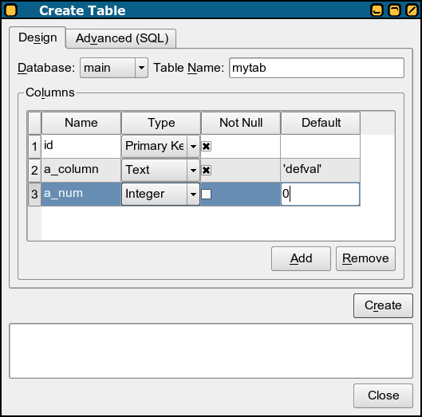

So called "Context" is the set of operation you can use for the selected object in the object tree browser. You can use the alternative access to this menu by the right mouse button (for right handed mouse).
Not all operations are available for all database objects.
Raise a dialog for table creation. You can use two ways to create table here.

First – as you see in the screenshot – you can create a table with mouse and only a few keyboard typing in the "Design" tab. And the second one by pure SQL statement.
Show database physical information in the result table.
Raise a dialog for table changing. This dialog looks quite similar like that "Create Table" one except a few things:
Sqlite ALTER TABLE command is very limited so there is no DROP COLUMN clause etc. use CREATE AS SELECT instead. (this feature can be introduced in the next versions of Sqliteman)
Really drop the table.
Perform REINDEX command. If is it called against index there is only this index recreated. If is it called against the table then all indexes are recreated.
Raise a dialog for the new view. There is the list of required properties you should fill:
Show database physical information in the result table.
A very similar dialog like "Create View". You can change only SQL statement here.
Really drop the view.
Raise a dialog for the new index. There is the list of required properties you should fill:
Show database physical information in the result table.
Really drop the index.
Detach the chosen database. The database will be removed from this session but the file will be saved. You cannot detach the "main" database.
Raise a dialog for the new trigger. There is a trigger template prepared for you. Just modify it to your needs. Then press the "Create" button and check the result.
Raise a similar dialog to the "Create Trigger" one with current trigger body preset. Sqlite does not support direct ALTER TRIGGER so there is a DROP and new CREATE performed after you click the "Alter" button.
Really drop the trigger.
There is one more unsupported SQL feauture. Sqlite does not enforce foreign keys and not null constraints. This action will create a workaround triggers for you. Your SQL DML statements will be checked against these triggers before their execution.
There are three kind of constraint triggers – one for each I/U/D operations. This tool suggests trigger names but you can change it in the "Name" widgets.
All triggers will be created after the "Create" click. Then check the results carefully.